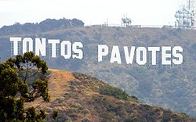

Hollywood
 De: La Frikipedia, la enciclopedia extremadamente seria.
De: La Frikipedia, la enciclopedia extremadamente seria.
| De la serie ciudades del mundo:
|
| Joliwud
|
|
|
|
| (Bandera)
|
(Escudo de armas)
|
|
| Topónimo oficial
|
Esto es ¡¡¡¡¡¡¡¡¡¡Hollywood!!!!!!!!!!!
|
| País
|
Estados jodidosEstados unidos
|
| Código postal
|
666
|
| Superficie
|
Plana
|
| Altitud
|
Hasta las estrellas
|
| Distancia
|
Desde los Angeles hasta la punta de la chingada
|
| Fundación
|
Cuando se creo el Cine
|
| Población
|
Actores,Directores,Escritores y Puro inmigrante
|
| Gentilicio
|
Actores
|
| Alcalde
|
Federico Trillo
|
| No no hacen musica, hacen peliculas
|

Yamcha admirando el paisaje holliwodense.
Hollywood (en inglés, bosque de acebo) es una aldea californiana en la cual se acumulan la gran mayoría de estudios cinematográficos de Estados Unidos. Se cree que tal concentración puede tener que ver con algún plan para dominar el mundo.
También es conocida por la cantidad de actores torpes que residen en ella (no hay más que ver los tropezones que se suelen dar en Sunset Boulevar, aterrizando frecuentemente de manos en cemento fresco y dejando la calle intransitable)
Enseñanzas
Gracias a las películas de Hollywood, muchas personas consideran un aprendizaje los siguientes hechos:
- Cualquier tipo de ser verde brillante.
- Todos los ordenadores tienen su propio SO, pero en cualquier caso nunca se utilizará el ratón. Todo se accede exclusivamente a través del teclado.
- El trabajo hecho en un PC se guarda automáticamente 1ms/s antes de que se cierre y se apague.
- Se guarda el texto escrito sin tener abierto un procesador de texto.
- El ordenador separa de forma automática las palabras, no es necesario pulsar la barra espaciadora.
- Cuándo cae una computadora en manos del protagonista, de pronto se descubre que es un hacker por las proezas informáticas que hace.
- Cuando al protagonista le despierta la alarma, el locutor de radio , que estaba esperando ,
le dice los buenos días y que tiempo hace ésa mañana.
- En las llamadas telefónicas no hay saludo ni despedida.
- Cuando insertas un disco de video o videocinta en el equipo reproductor, inmediatamente aparece en la pantalla el video de forma directa, sin que aparezca ningún menú de configuración.
- En las peleas a puñetazos los golpes emiten sonidos exagerados.
- Cuándo los buenos creen que no es necesario matar a alguien que interfiere en sus propósitos, sólo le dan un golpe y a dormir.
- El protagonista nunca muere sin haber matado al malo.
- Cualquier coche que colisione explotará o arderá en llamas aunque no lleve gasolina.
- El malo secuestra al protagonista y lo coloca en la mas compleja situación de secuestro o muerte, le explicará detalladamente su plan y llamará a su mujer en el acto. Después, el protagonista escapará.
- Se puede salir vivo aunque te metan un obús nuclear por el culo después de haber comido fabada.
- Cuando el protagonista pelea con el malo recibe muchos golpes y se hace muchas heridas y no se queja. Cuando su mujer (o cualquier otra persona) se las cura, se queja porque le escuece.
- Cada vez que los malos superen en numero al protagonista, en vez de ir todos a la vez, irán a pelear uno a uno mientras los demás se quedan moviéndose a su alrededor poniendo cara de malo. otra alternativa es que haya alguna escapatoria ingeniosísima (de las que solo habría uno entre dos trillones en la realidad) y el protagonista se larga dejando los malos con cara de idiota.
- Una vez aplicada la barra de labios es imposible que se corra el color… aunque hagas submarinismo.
- Si tienes que recargar la desnudo.
- La torre Eiffel se puede ver desde cualquier ventana de París.
- Si tienes que pagar un Taxi, no busques un billete en la cartera: saca lo que tengas en el bolsillo al azar. Siempre será el importe exacto.
- Las bombas van equipadas con temporizadores que tienen pantallas con grandes números rojos para que uno sepa cuándo van a estallar.
- En toda investigación striptease.
- Todos los números de teléfonos de Estados Unidos comienzan por 555.
- La familia del protagonista nunca lo va a ver al hospital.
- Todas las bolsas de la compra del supermercado (siempre de papel) deben tener, como mínimo, una barra de pan que sobresalga un poco.
- En todas las persecuciones se les da esquinazo a los malos, es decir, se la pegan contra una esquina o los buenos escapan (haya o no haya esquinas).
- En los tiroteos, una de dos, o los malos tienen pésima puntería o los buenos usan alguna clase de repelente contra balas, pues el chico malo no acierta ni que les dispare a quemarropa con un
lanzacagadas lanzagranadas.
- Los "buenos" siempre le dan al blanco(o al negro)aunque nunca en su vida hallan tocado un arma.
- Hay muchos servicios gratuitos como el tren subterráneo(
subgüey subway)y otros trenes, celular, restaurantes esto me huele a comunismo .
- Algunos personajes son algo extraños pues nunca se les ve comiendo, ni trabajando,ni siquiera se bañan; tampoco se les ve preocupados por su sueldo, siempre andan dinero.
- En las persecuciones las únicas víctimas son fruteros y verduleros con sus correspondientes puestos o carros.
- El bueno y el malo llevan armas encima hasta en la ducha.
- Cuando algo gordo pasa y el protagonista está relacionado con eso, nada más encender la TV aparecerán las noticias e inmediatamente lo que sea que se relacione con el protagonista.
- Las películas que acaban con un "To Be Continued..." nunca tienen secuela o se tardan muchísimos años en hacerla.
- Las que no, tienen.
- El bueno siempre tiene que ser un europeos, asiáticos e incluso rusos.
- Hasta hace poco, los malos siempre eran comunistas, aunque hoy en día son los moros porque son siempre los que organizan secuestros y atentados terroristas.
- Los vagabundos siempre tienen una botella de alcohol envuelta en una bolsa de papel marrón (para preservar el calor de la bebida en el frío invierno neoyorquino).
- Siempre que alguien busca algo en un libro, lo encuentra en la primera página en que lo abra sin necesidad de buscar (Los libros de Hollywood saben donde abrirse).
- Las empleadas siempre son latinas, con nombres como Rosa,Rosita,Maria etc.
- Cuando el malo es un tio con un montón de esbirros, en algún momento les explicará su plan (dando igual si ya lo saben o no) y luego reirán lo mas malvadamente posible todos juntos.
- Si al prota le persiguen los zombis e intenta huir en coche, dará igual los metros que les lleve de ventaja. El coche arrancará cuando tenga a los zombies golpeando en el cristal.
- Cuanto mas malhumorado sea el camarero de un bar, mas posibilidades hay de que tenga una escopeta bajo la barra.
- En las pelis de guerra, el soldado que enseñe una foto de su novia o prometida será el que muera primero.
- Cuando alguien es expulsado de un local, se le lanza por la parte de atrás del mismo y aterriza en un montón de cubos de basura.
- Cuando alguien pasa por un barrio marginal de noche, siempre podrá ver a uno o dos vagabundos calentándose con el fuego que sale de un bidón.
- Cuando una multitud enfurecida está abucheando a un personaje, no importa lo enfadados que estean, basta con que un amigo del abucheado grite ¡SILENCIOOOOOOOOOOO! para que todos se callen.
- En las comedias de soldados o policías, siempre suele haber en el grupo un gordito, un torpón, un fortachón que no controla su fuerza y uno que se lleva mal con todos, entre otros.
- Cuando un personaje se enamore de otro, este se quedará mirándolo embobado mientras camina a cámara lenta.
- Las julandras americanas hablan mucho por teléfono desde su cama , y el teléfono tendrá formas raras (garfields ,hamburguesas , hasta pollos) también suelen ser rositas.
- Los estadounidenses se alimentan principalmente de emparedados de crema de cacahuete , eso sí,le aportará suficientes energías para una odisea o un duro día.
- Si un asesino persigue a una chica , la chica sufrirá un retraso mental momentáneo que la hará caer.
- La chica nerd gafapasta marginada de la clase , se descubrirá al final en el baile de fin de curso,que bien peinada sin gafas y lavada , es una diosa.
- Si al prota un falso aliado (suele ser mujer) le descubre el malo que estaba jugando a dos bandas , al final el falso aliado empatiza con el prota , en plan de que lo quiere y siente mucho.
- Todo vagabundo que beba tumbado en la calle llevará la botella dentro de una bolsa de papel.
 Nueva imagen de Holliwood, en dedicatoria a Brian Recchi.
Los Ordenadores en las películas de Jollygüd
Hollywood y su tema preferido
Algo interesante que hay que notar de las películas hollywoodenses, es que los ordenadores nunca se comportan como los ordenadores de la vida real, he aquí unos ejemplos:
- Los equipos de alta tecnología son a menudo manejados por una computadora con MS-DOS. (recuerdas: RoboCop)
- Las empresas de alta tecnología no realizan copias de seguridad de los datos fuera (recuerdas: Terminator 2)
- Todos los dispositivos de los medios de comunicación son fácilmente disponibles, es decir, si alguien tiene una cinta DAT con datos importantes, tu PC tendrá una unidad DAT.
- No importa lo que le pidas a la computadora que haga, para hacerlo va a responder con un gráfico de porcentaje completo, aunque sea algo fácil de encontrar siempre sale el bendito grafico de porcentaje.
- Borrar los datos siempre toma un poco menos de tiempo del que tardan los chicos malos en tumbar la puerta.
- Toda la tecnología es plug and play, cualquier equipo puede tener cualquier pieza de tecnología adjunta.
- Las interfaces gráficas de alta tecnología son a menudo impulsadas por cientos de golpes de teclado que no aparecen en la pantalla.
- Las direcciones IP automáticamente le indican a los federales cual es la dirección física de los hackers (es decir, inicias sesión y ya saben donde se encuentran!)
- Los procesadores de textos nunca muestran el cursor.
- Nunca tienen que utilizar la barra espaciadora al escribir frases largas. Siguen golpeando las teclas sin parar.
- Todos los monitores presentan letras como de 2 pulgadas de altura.
- Las computadoras de alta tecnología, como las utilizadas por la NASA, la CIA, o alguna institución gubernamental, tienen interfaces gráficas de fácil comprensión.
- Se puede obtener acceso a cualquier información que desee escribiendo simplemente “ACCESO A TODOS LOS ARCHIVOS SECRETOS” en cualquier teclado.
- Asimismo, puedes infectar una computadora con un virus destructivo simplemente escribiendo “UPLOAD VIRUS”. Los virus causan en los ordenadores altas temperaturas, al igual que lo hacen en los seres humanos. Después de un tiempo, sale el humo del disco, el monitor y otras unidades, parecieran enfermas de verdad.
- Todas las computadoras están conectadas todo el tiempo. Puedes acceder a la información de la computadora de escritorio del villano, aun cuando este apagada.
- Cuando la gente terminar de escribir algo en la computadora la apagan sin guardar los datos.
- Un hacker puede entrar en la computadora más protegida en el mundo en un dos por tres ya que adivina la contraseña secreta en dos intentos.
- Los cálculos complejos y la carga de enormes cantidades de datos se realizará en menos de tres segundos. En el cine, los módems transmiten dos gigabytes de datos por segundo.
- Cuando la planta de energía / sitio de misiles/ o lo que sea se sobrecalienta, todos los paneles de control explotarán, al igual que todo el edificio.
- Si un archivo es borrado no se puede recuperar. Porque no existen utilidades undelete.
- Si un disco tiene archivos encriptados, automáticamente te pide una contraseña al intentar acceder a él.
- No importa qué tipo de disquete de computadora sea, será leído por cualquier sistema en que se ponga. Todo el software de aplicación se puede utilizar por todas las plataformas informáticas.
- La mayoría de las computadoras, no importa cuán pequeñas sean, tienen la capacidad de realizar trabajos en tres dimensiones, con animaciones en tiempo real, y trabajos que requieren altas capacidades graficas.
- Las computadoras portátiles, por alguna extraña razón, siempre parecen tener sorprendentes capacidades de vídeo en tiempo real, telefonía y un alto rendimiento como una súper computadora.
- Los seres humanos que operan computadoras nunca cometen errores bajo condiciones de estrés.
- Para borrar algo, no se oprime continuamente o se mantiene apretada la tecla delete, supr o backspace o no se seleccione un texto a borrar, sino que con una vez que se oprima la tecla mencionada suficiente y comienza a borrar el texto anterior.
Autor(es):
- Krusher
- Nexo
- Emedeme
- Hari Seldon
- Kurrus
- Viento
- Heces
- Khazike Khashondo
- Nadaquever
- Frikih
Frikipedia 2005-2016, Licencia
GFDL 1.2 - Extraído por FrikiLeaks